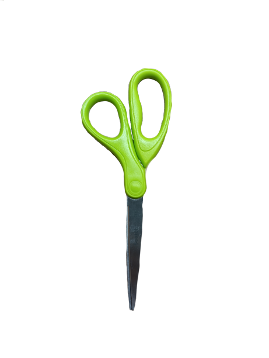

Common Types of Folds
Valley fold
The paper is folded towards you, forming a “v" shape. it’s the foundation of almost every origami model.
Mountain fold
The paper is folded away from you, forming an upside down “v” shape. often paired with valley folds to form 3d structures.
Pleat fold
Two parallel folds in opposite directions, creating what looks like an accordion. useful for layering and shaping.
Squash fold
A flap is opened and pressed flat to form a triangular or pointed shape. widely used in cranes and flowers.
Reverse fold (inside/outside)
A flap is folded along an existing crease inward or outward. commonly used to create limbs, beaks, or tails.
Rabbit ear fold
A combination of folds forming a pointed flap resembling a rabbit’s ear, often used for legs, ears, or markings.
Crimp fold
Two folds in opposite directions close together, forming a zigzag. used for claws, wings, or intricate features.
Petal fold
A flap is lifted and folded into a point using valley and mountain folds. essential for making flower petals.
Commonly Used Tools
aside from paper, these tools can guide or help in making origami more precise and creative.
Scissors
Pencil

Ruler